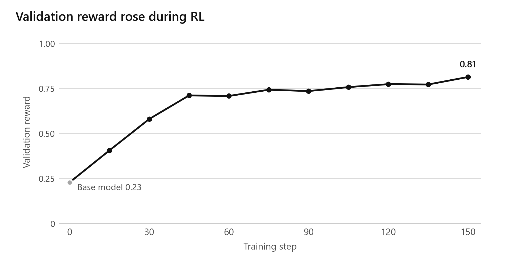
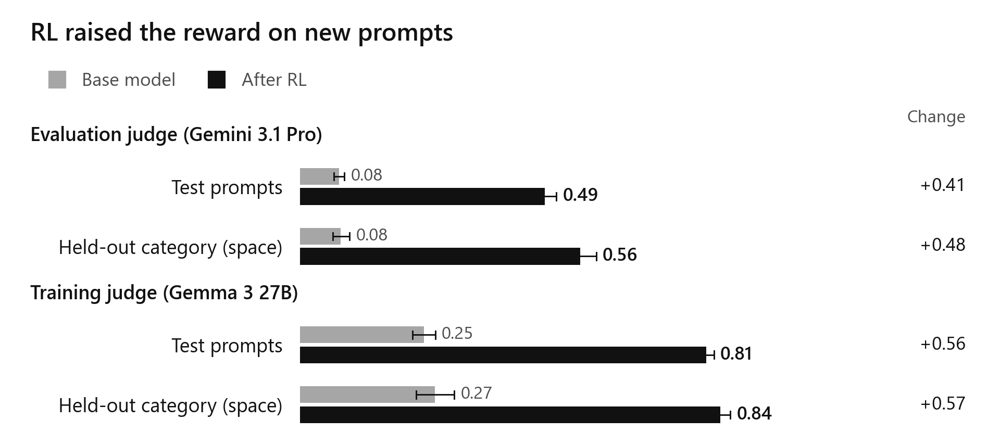
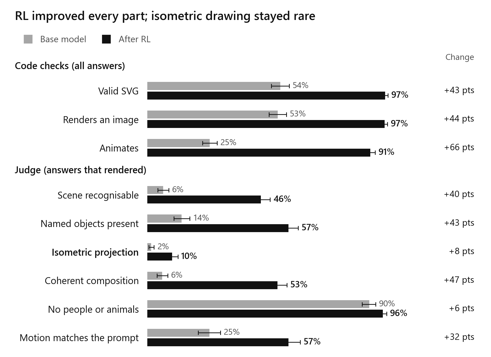
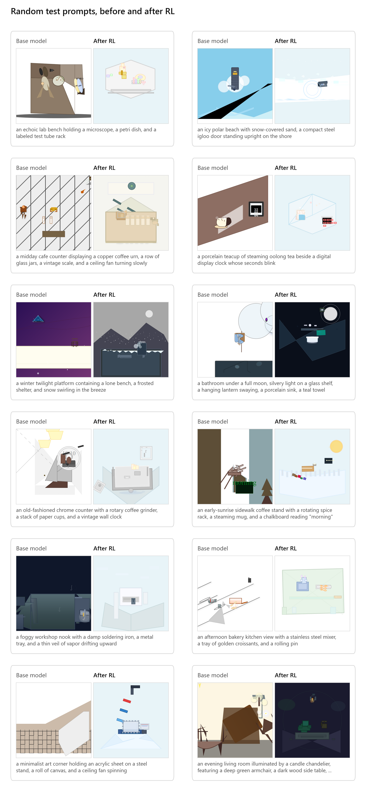

I post-trained Qwen3.5-4B with RL and LoRA to produce animated isometric SVGs of places and objects, using a reward built from rule-based checks, sandboxed rendering, frame checks and a vision-language model (VLM) judge. Under Gemini 3.1 Pro, which had no role in training, reward rose from 0.078 to 0.489 on test and from 0.082 to 0.561 on space scenes, a category excluded from training. On test, the rates for valid SVG and animation reached 97% and 91%; scene recognition, object visibility and composition judgments also improved. Isometric drawing remained rare: Gemini marked 2% of base and 10% of RL answers as isometric among those that passed the initial checks and produced a nonblank image. This setup tests whether VLM feedback can improve isometric drawing without reference images to score against.
Each answer must contain one self-contained SVG that depicts and animates the requested scene. The system prompt specifies parallel edges, no vanishing point and receding edges at 30 degrees; it also requires script-free animation and excludes people and animals, including faces and likenesses such as statues or dolls.
The released dataset contains 2,048 prompts written by gpt-oss-120b: 1,600 for training, 88 for validation, 240 for testing and 120 for a held-out category. Training, validation and test divide evenly among home interiors, shops and food service, streets and rooftops, workspaces, nature and islands, food and drink, transport, and single objects. Selection combined automatic filtering and deduplication with model review covering evaluation splits (validation, test and held-out space) plus a training audit, which sampled training prompts randomly with a fixed seed. An example from the test split, also shown in Figure 5, is "a midday cafe counter displaying a copper coffee urn, a row of glass jars, a vintage scale, and a ceiling fan turning slowly".
I held out the space category entirely to test performance on a category absent from training. Distractor prompts introduce a person, animal or face to test whether the model leaves them out. They constitute 10% of training prompts and 16.7% of test prompts, with 40 distractor prompts in test.
A second model, Claude Opus 5.5, checked every evaluation prompt and the randomly sampled training prompts individually against the dataset rules, using the same review prompt. The review model checked for a single scene, at most four main objects, proper nouns, category membership, motion labels (whether the description specifies movement) and implied people or animals. Flagged prompts received replacements from a reserve pool; evaluation replacements underwent review in the following round, continuing for 14 rounds in total. For the evaluation splits, it rejected 246 candidates, including 211 for category mismatches. Across rounds, the training audit grew to 446 prompts, of which the model flagged 89 (20%, Wilson 95% CI [16.5%, 23.9%]) for replacement and kept 357. Automatic filters alone checked the other 1,243 training prompts, including 81 of the replacement prompts; together with the retained audit prompts, these form the 1,600 training examples.
For a manual check, I inspected 50 items sampled randomly with a fixed seed from those the review model kept in round 1 and removed none, giving a Wilson upper confidence limit of 7.1% (95% confidence) for missed violations among that round's kept items. An earlier review, since discarded, had exposed me to items from this candidate pool, so the check was not blind.
The rule-based checks require a single self-contained SVG of at most 64 KB and reject scripts, event handlers and external references. Each SVG text element must reproduce an entire passage quoted in the prompt, ignoring differences in case or spacing; each passage may appear at most twice. This restricts the model's ability to influence the judge by writing the requested scene description into the image.
Rule-based checks
Document limits and permitted SVG content
Render
One frame at zero; three at seeded times
Frame checks
Blank first frame and motion check
VLM judge
Four frames and scene description; six yes/no answers
Each SVG renders in a fresh, isolated sandbox that blocks outbound traffic, keeping untrusted code off the training machine. The renderer captures four frames: one at time zero and three in (0, 3] s, with the SVG text hash seeding their timing. Varying the times avoids sampling a periodic animation repeatedly at an identical phase.
Frame checks reject a blank first frame when one colour occupies more than 98% of it. The motion check detects changes confined to part of the image: the largest changed-pixel share between two frames must fall between 0.2% and 50%. At least one frame pair after time zero must have at least 0.2% changed pixels, so a single initial change cannot satisfy the motion check. Across the four frames, the highest mean brightness minus the lowest must stay below 10 on the 0 to 255 scale, rejecting full-frame flashes or blinks.
Gemma 3 27B (google/gemma-3-27b-it; Gemma below) supplied the training judgments. In SVG-Score, Gemma 3 12B placed second out of five open zero-shot judges by Spearman correlation with human ratings: 66.7, behind Qwen3-VL-8B at 67.8. That judge comparison did not include the larger model used here. I chose Gemma because its open weights let anyone repeat reward scoring with it, and its speed and low cost made judging every rollout practical. At temperature 0, it returns six yes/no answers within a 256-token limit: scene recognition, visibility of most named objects, isometric geometry, composition, prohibited people or animals, and whether movement fits the description (the motion question).
Gemini 3.1 Pro served only as the evaluation VLM judge. Its judgments agreed most closely with human assessments among the three models compared in MUSE, a study of generated CAD models. With no public benchmark for judges of isometric SVGs, the choice relied on the closest published comparison available. Keeping it out of training also prevented direct optimization against its judgments.
Reward is zero for a failed rule-based check, an SVG that fails to render, blankness in the first frame or detected people or animals. Otherwise, reward averages the scene, object, isometric and composition judgments with the motion check, adding the motion question when the prompt names motion. Failing the motion check loses that item in the average while leaving the other items available. Sandbox or VLM-judge failures leave answers unscored and exclude them from training and evaluation. An answer has "reached the judge" when it passes the rule-based checks and renders successfully with a nonblank first frame.
At each training step, the policy generates 8 answers for each prompt. Advantage equals the answer's reward minus its group mean. This retains the group-mean baseline from GRPO and omits standard-deviation scaling, as in Dr. GRPO. Training used the open-source trainer prime-rl, the environment library verifiers, and the default INTELLECT Policy Optimization (IPO) loss, an importance-weighted policy-gradient objective. The loss masks a token when the absolute difference between its training-policy and sampling-policy probabilities exceeds epsilon = 0.3.
I chose Qwen3.5-4B for its small size and open weights, with its low starting scores offering scope for improvement. LoRA kept training requirements manageable; LoRA Without Regret found that LoRA matched full fine-tuning in its policy-gradient RL experiments. I used 1e-5, the learning rate from prime-rl's LoRA example, without tuning it.
With thinking disabled, training ran for 150 steps with 128 rollouts per step (16 prompts, 8 answers each). Two H100 GPUs split the work: one ran the trainer and one ran inference. Asynchronous execution let inference prepare the following step's rollouts during updates, with a maximum lag of 8 policy versions.
Every 15 steps, Gemma scored answers to 88 validation prompts, with 4 answers per prompt. Reward began at 0.227 at step 0 and was highest at the final checkpoint, 0.813 at step 150. I selected step 150 using validation alone because its reward was highest. The curve had not clearly flattened by the end; I did not try a longer run.

Each model generated 4 answers per test or space prompt at temperature 1.0, using the same seeds, 0 through 3, for both models. An answer pair contains a base answer and an RL answer generated for the same prompt and seed. Gemini scored the answers, and paired bootstrap resampling over prompts gives the 95% confidence intervals (CIs) for reward differences.
Across 240 test prompts, reward was 0.078 for base and 0.489 for RL, a difference of +0.411 [0.387, 0.435]. On 120 held-out space prompts, reward was 0.082 and 0.561, a difference of +0.479 [0.448, 0.511]. Figure 3 compares the reward estimates from Gemini and Gemma. Evaluation API calls failed for two of the 960 RL test answers, leaving them unscored; assigning them zero gives a test difference of +0.409 [0.385, 0.432].

Before evaluation, I settled on the judge comparison to check for reward hacking. It uses answer pairs whose answers both judges scored: 921 on test and 466 in the space category. On test, Gemma scored base at 0.25 and RL at 0.81, with gains of 0.56 under Gemma and 0.41 under Gemini. These gains differ by 0.15 [0.12, 0.18] on test and 0.09 [0.04, 0.14] on space. Gemma's higher base score (0.25 vs. 0.08 from Gemini) indicates greater leniency.
Across all scored test answers (960 base, 958 RL), the share passing all rule-based checks ("Valid SVG") was 54% [51%, 58%] for base and 97% [96%, 98%] for RL. The motion check ("Animates") passed for 25% [22%, 28%] of base and 91% [89%, 93%] of RL answers. These shares use 95% CIs from cluster bootstrap resampling over prompts.
Among answers that reached the judge (510 base, 926 RL), scene recognition rose from 6% to 46%, visibility of most named objects from 14% to 57%, and composition from 6% to 53% (Figure 4). The earlier checks admit more RL answers, so pass rates for each question describe different subsets for the two models. For prompts naming motion, among answers that reached the judge, Gemini's pass rate for the motion question rose from 25% to 57%.

Among answers that reached the judge, Gemini marked 10% [8%, 12%] of RL answers as isometric, compared with 2% [1%, 3%] of base answers (cluster bootstrap 95% CIs).
Because isometric geometry contributes one item to the average, passing all remaining items earns 0.8, or 5/6 on a prompt that names motion, even with a failed isometric judgment.
Distractor prompts showed no clear improvement in excluding people and animals. The 40 test distractor prompts produced 160 base and 159 scored RL answers (one evaluation API failure), with people or animals detected in 27 and 29 respectively: 17% and 18%. Answers rejected before judging remain in these denominators with no detected people or animals. Among answers that reached the judge, the rates were 35% for base and 19% for RL. Gemini detected people or animals in similar numbers of answers while assessing twice as many RL answers, so the lower rate gives no evidence of better compliance with this rule. In Figure 4, "No people or animals" measures the absence of people or animals among answers that reached the judge across all prompt types; the distractor result counts all scored answers from the distractor subset.

In Figure 5, many base renderings consist of large flat shapes, with cropping or broken forms. The RL renderings share a visual style: small objects on platforms or floors, often with pale backgrounds.
The blind comparison covers 50 test prompts, including distractors, with randomly assigned left and right positions. I viewed the animated SVGs side by side with model identities hidden and chose which scene better depicted the prompt in isometric form, or recorded a tie: 40 preferences for RL, 6 for base and 4 ties. Excluding ties gives a win rate of 0.87 (Wilson 95% CI [0.74, 0.94]). For the 30 answer pairs in which both answers reached the judge, my ratings were 22 for RL, 5 for base and 3 ties, giving 0.81 [0.63, 0.92]. I was the sole rater, and the recognisable RL style weakened blinding.
Pass rates for the rule-based checks and motion check reached 97% and 91%, leaving limited headroom in these reward components. I interpret Gemini's higher ratings for scene recognition and composition as evidence of improved scene content, although the rates describe different subsets of base and RL answers.
Isometric drawing remained rare despite the higher reward. An answer can receive most of the reward while failing this item, and Gemma's ability to distinguish the required geometry has not been measured on this task. This run cannot determine how much reward averaging or errors in judging geometry contributed to the low isometric rate.
Detecting people or animals forces reward to zero, yet distractor results show no clear improvement in leaving them out. In the judge comparison, Gemma measured a larger improvement than Gemini. The comparison cannot separate differences in scoring scale from adaptation to the training judge.
Neither VLM judge has human validation on this task. The low isometric rate is therefore ambiguous: it could reflect the drawings, the judge's recognition of 30-degree geometry, or both. Google developed Gemini and Gemma, so Gemini provides a less independent evaluation than its absence from training might suggest. A weakness common to them could inflate scores from each judge while escaping the comparison. Human evidence consists solely of my blind preferences, with blinding weakened by the RL model's recognisable style.
A single run under one configuration improved over the base model, the sole baseline. How consistently this training recipe produces gains remains untested, as does its performance relative to supervised fine-tuning or a larger model prompted for the task.
The repository contains the code for this run, using prime-rl (commit 35fcb52) and verifiers (commit 540f40f). training/rl.toml defines training; the training README gives the launch procedure.
The released adapter uses rank 32 and alpha 64 across attention, Gated DeltaNet (the model's linear-attention layers) and MLP projections. Training used temperature 1.0 and an 8,192-token answer limit.
training/final_eval.toml generates evaluation answers and obtains training-judge scores. The pipeline in training/run_all.sh invokes training/rescore.py to score those answers with Gemini. Gemini 3.1 Pro (google/gemini-3.1-pro-preview) served as the evaluation judge at temperature 0 with an 8,192-token limit. Commands in the analysis README show how to recompute the evaluation measurements and figures from answers released alongside the adapter on Hugging Face.
For the blind comparison, seed 2026 selected the prompts, seed 0 generated each compared answer, and seed 7 assigned the left and right positions. The motion check marks a pixel as changed when any colour channel differs by more than 8 on the 0 to 255 scale.
Dataset review ran through Prime Inference at temperature 0. Each generation request has a seed and a log containing the generator's reply. The dataset build README gives the command to rebuild the splits with the prompt_data/ code and logs in the Hugging Face dataset's raw/ folder. Processing those saved generations reproduces the splits byte for byte; generating prompts again yields a different set of candidates.
The renderer runs in Prime Intellect sandboxes using the browser image pinned by render_image/Dockerfile (Playwright 1.52.0), so rebuilding preserves how it renders SVGs. For the task, see the Environments Hub. Code and adapter use Apache-2.0; the dataset uses CC BY 4.0.
@misc{hasan2026isometricscenes,
author = {Najmul Hasan},
title = {Isometric Scenes: RL post-training Qwen3.5-4B to write animated isometric SVG},
year = {2026},
url = {https://github.com/najmulhasan-code/isometric-scenes}
}